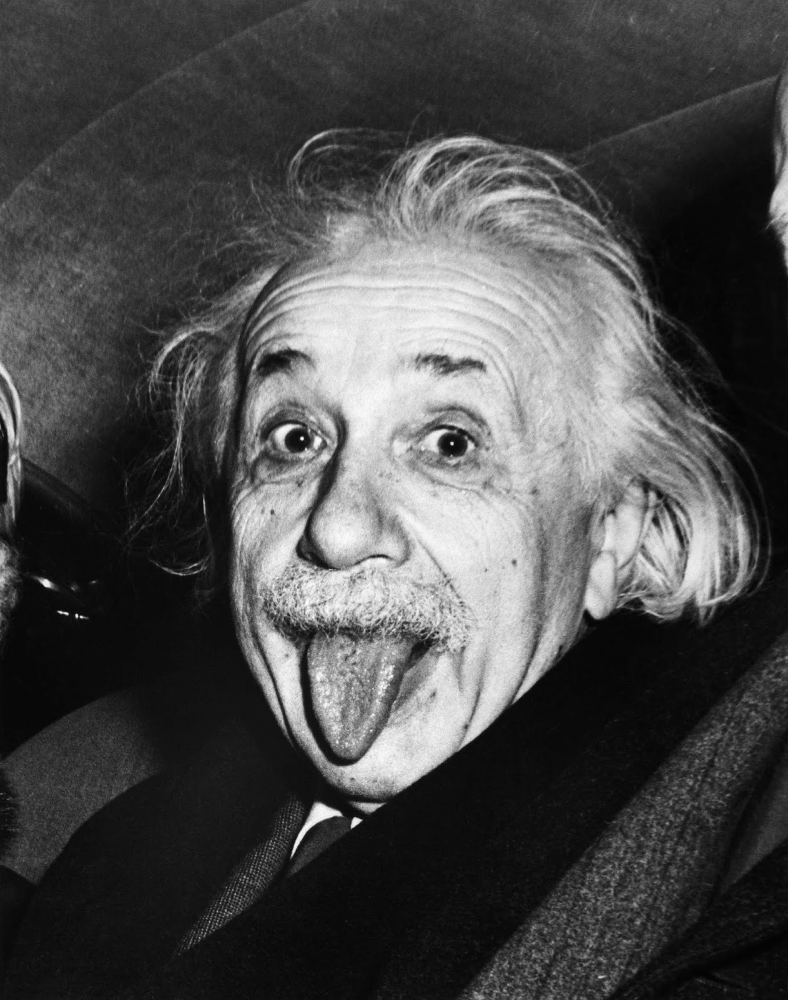
About
Albert Einstein was born on March 14th, 1879 in the German Empire to Hermann Einstein and Pauline Koch. From a young age, he loved and excelled at physics and math. His precociousness in both subjects seemingly beyond comprehension.
At age 17, he enrolled in the mathematics and teaching diploma program at the Swiss Federal Polytechnic School in Zurich. It was here he met his first wife, Serbian Mileva Marić, who bore him two sons. One in 1904 and one in 1910. He graduated in 1900, soon after publishing his first paper, “Conclusions Drawn from the Phenomena of Capillarity" in 1901.
He had trouble finding a teaching job post graduation and so ended up at the Swiss Patent Office. While working there, he obtained his PhD from the University of Zurich in 1905 for his dissertation "A New Determination of Molecular Dimensions". A few years later, he managed to land his first teaching job at the University of Bern, at which point he left his civil service job.
He was promoted to full professorship in 1911 when he moved to Germany to work at Charles-Ferdinand University. However, he soon returned to his alma mater to teach and research theoretical physics. Ironically, he was soon persuaded to move back to Germany to join the Prussian Academy of Sciences and the Humboldt University of Berlin. Both positions which would allow him to focus solely on research and not teaching. He was also promised to be made director of the soon-to-be-built Kaiser Wilhelm Institute of Physics. Not only was he offered these highly lucrative research jobs, but Berlin also happened to be where his current girlfriend, Elsa Löwenthal, lived. He married her in 1919 and remained married to her until her death in 1936.
During his time at the Prussian Academy, he toured the world giving lectures in various countries. This eventually landed him in the USA in 1933. Initially he was only planning to visit, but with the Nazis' rise to power back in Germany, he decided it would be better to stay. He resigned from the Prussian Academy in 1933, and after a tumultuous transition period due to Nazi interference (during which his future and career were uncertain), he settled in Princeton, New Jersey. He worked at the Institute for Advanced Study there until 1955.
He is most well known for his contributions to the theory of relativity (also known as the theory of gravity) and to quantum theory. His other areas of study include, but are not limited to: thermodynamics, analytical mechanics, special relativity, physical cosmology, atomic physics, and quantum mechanics. In other words, he strove to study the entire universe, big and small. He published more than 300 scientific papers and 150 non-scientific ones. There are currently 30,000 unique documents penned by him in circulation. He also collaborated with other scientists on additional projects. He received the Nobel Peace Prize in 1912 for his services to theoretical physics.
In his free time, he most enjoys music and sailing. He started violin at 5 years old but didn’t grow to appreciate it till much older. What really spurred his love was discovering Mozart. He took up chamber music, and although he never went professional, it became core to his social life. He often performs for private audiences and friends. Anecdotally, he is said to be excellent.
Conversely, he is said to be a terrible sailor with no sense of direction and an inability to steer properly. That doesn’t matter to him though; he simply enjoys being on a boat. To him, the destination didn’t matter. He finds it relaxing all the same.
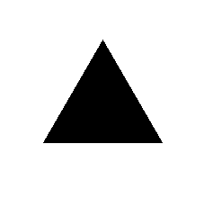
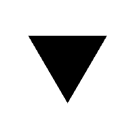
Bibliography
- Uber einen die Erzeugung und Verwandlung des Lichtes betreffenden heurischen Gesichtpunkt - 1905
- On the movement of small particles suspended in stationary liquids required by the molecular-kinetic theory of heat - 1905
- Zur Elektrodynamik bewegter Körper - 1905
- Eine neue bestimmung der moleküldimensionen - 1905
- On a Heuristic Point of View Toward the Emission and Transformation of Light - 1905
- Berichtigung zu meiner Arbeit Eine neue Bestimmung der Moleküldimensionen - 1911
- Zur quantentheorie der strahlung? - 1915
- La relativité : la théorie de la relativiré restreinte et générale, la relativité et problème de l'espace - 1916
- Investigations on the theory of the Brownian movement - 1922
- Can quantum-mechanical description of physical reality be considered complete? - 1935
Image Library
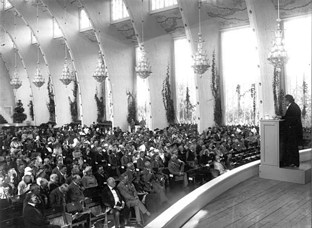
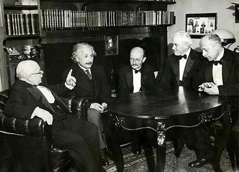
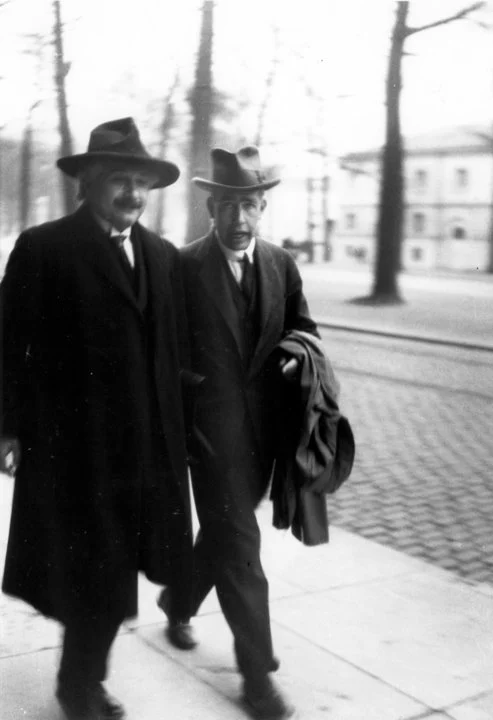
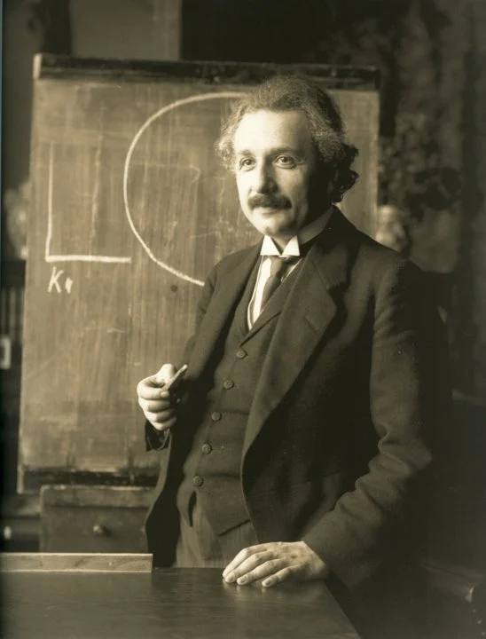
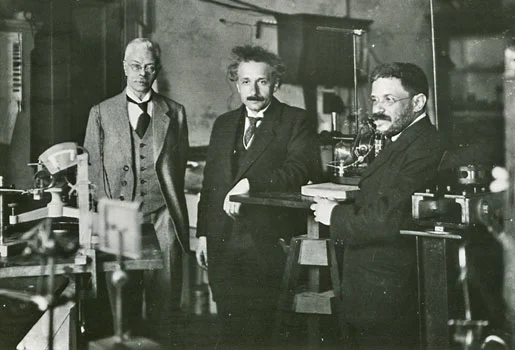
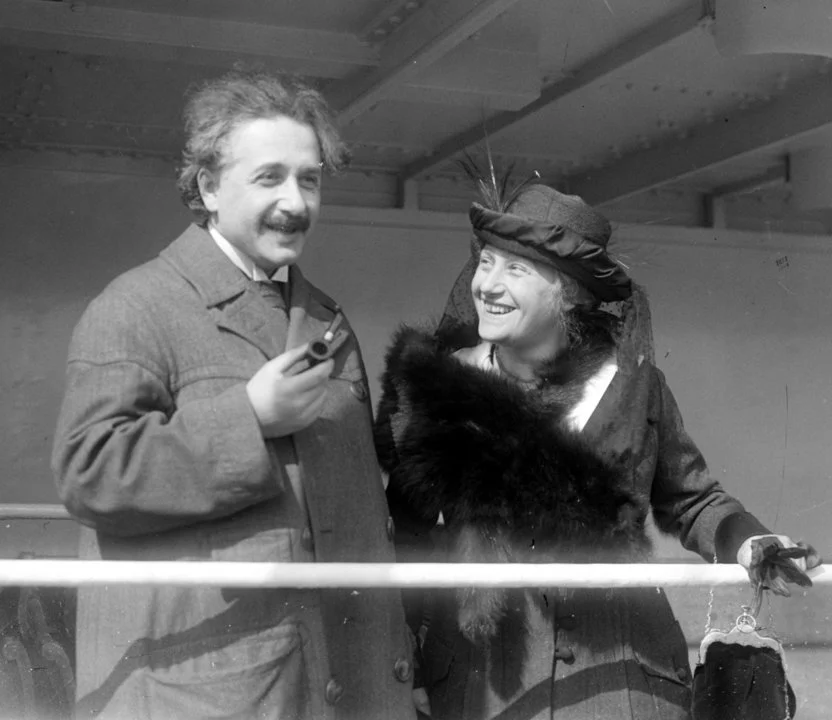
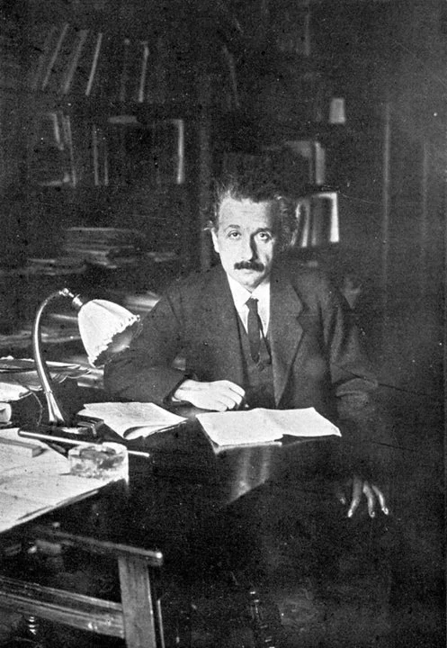
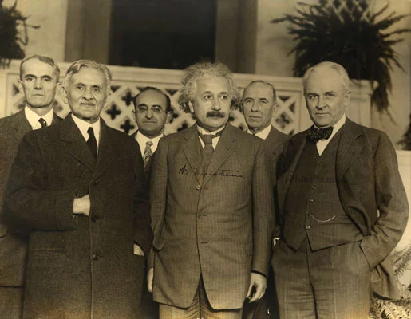
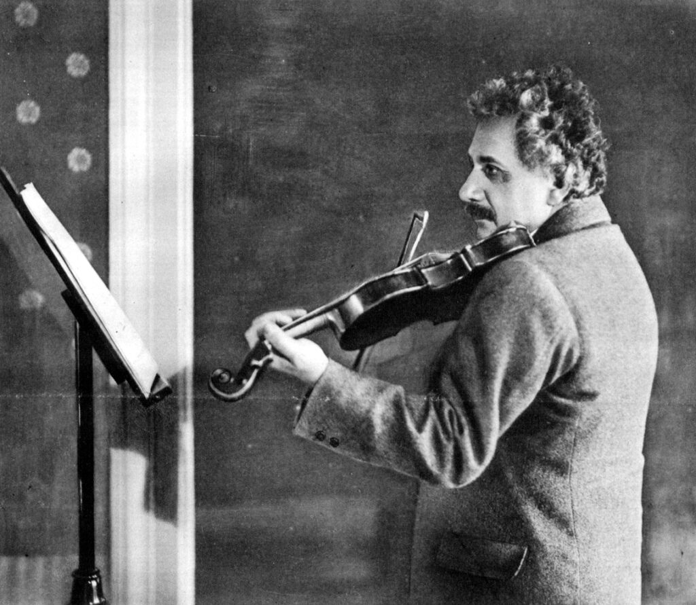
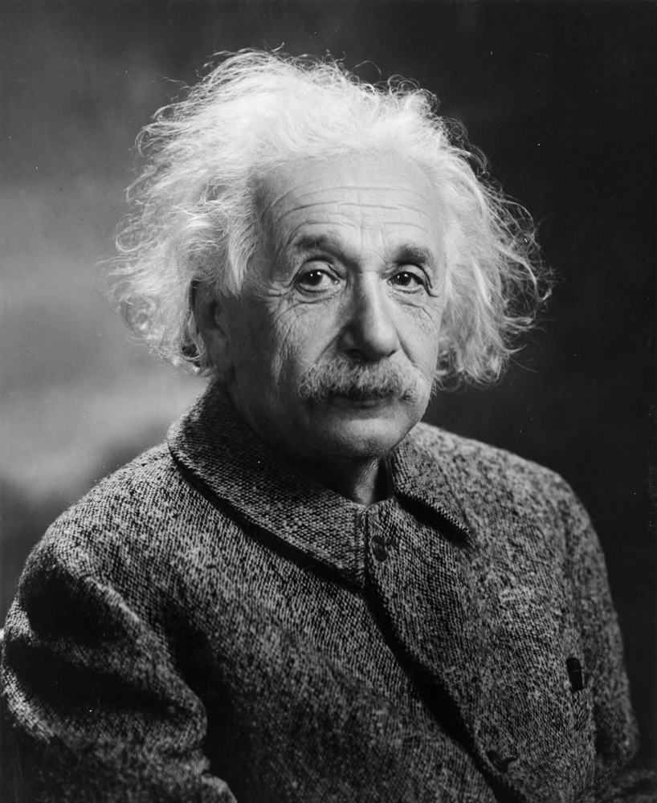
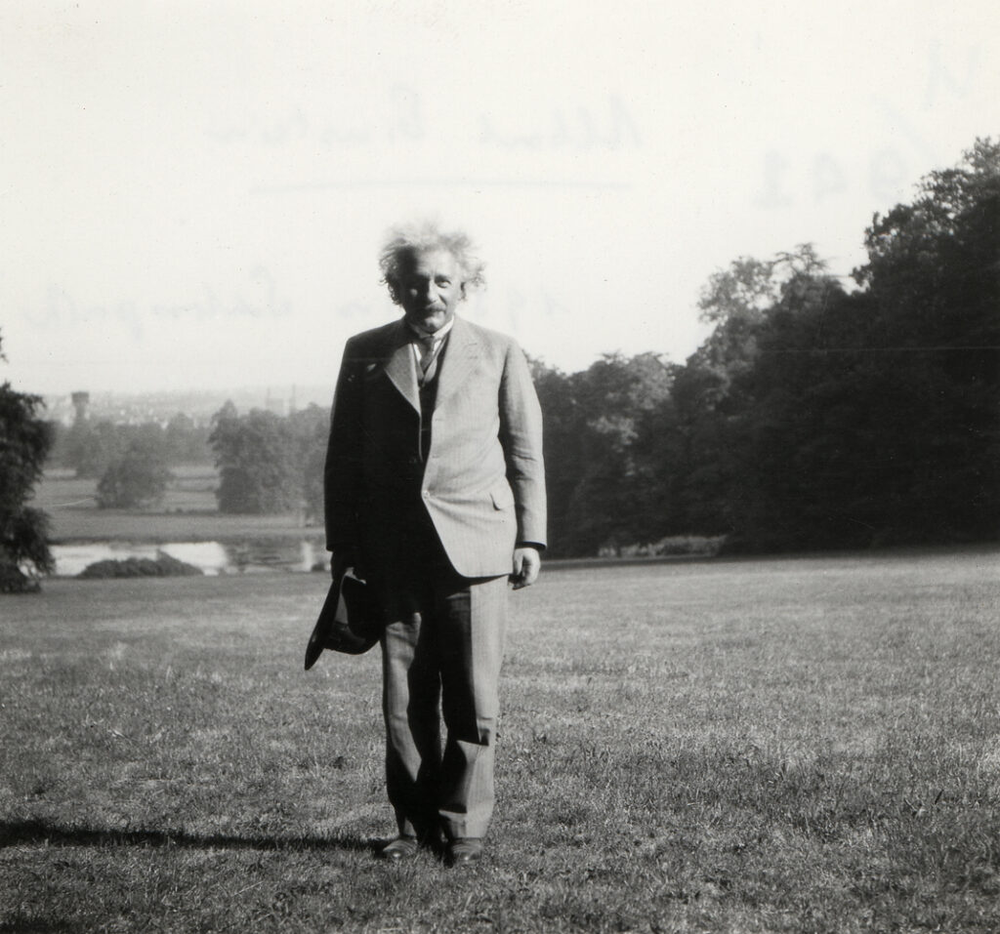
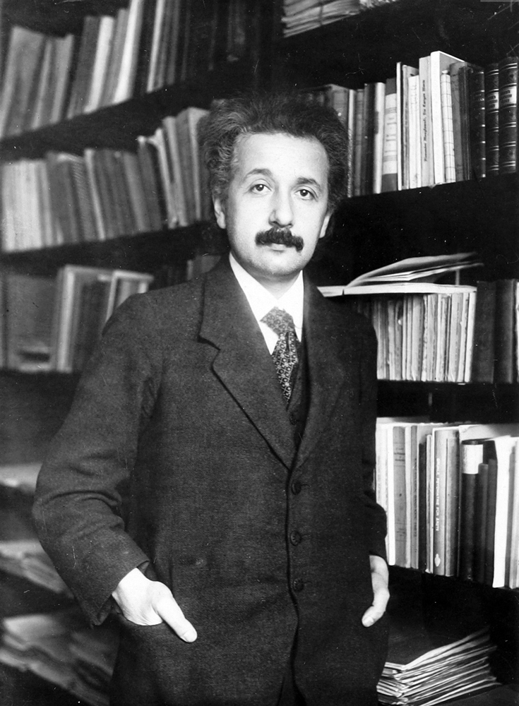
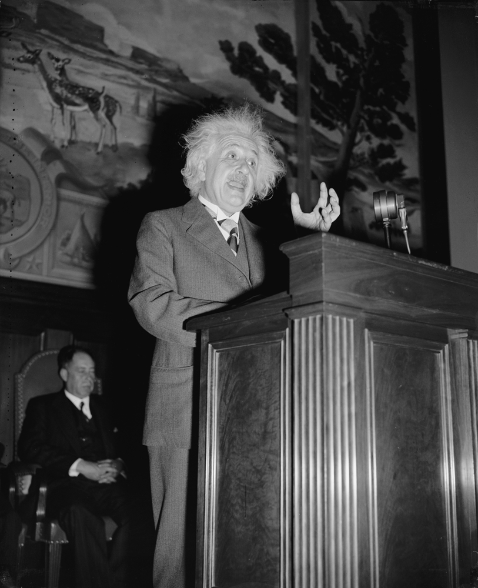
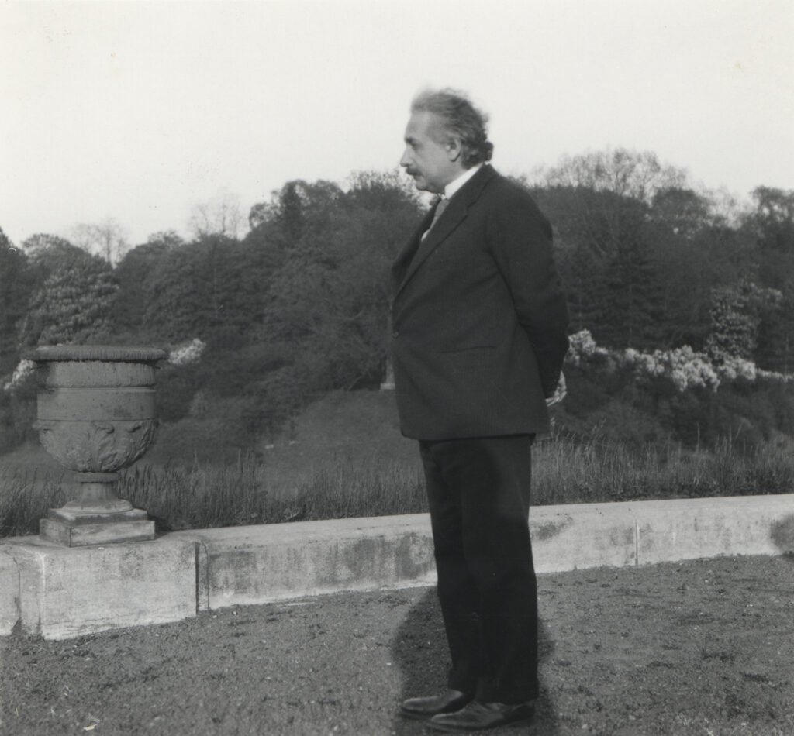
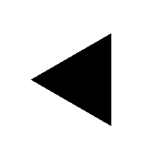
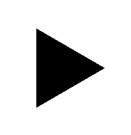
My Blog
First Website June 8th, 2026Entering the Future June 12th, 2026Journal Entry 1 June 15th, 2026My Favorite Modern Technologies June 22nd, 2026Journal Entry 2 June 29th, 2026Journal Entry 3 July 6th, 2026My Favorite Modern Fields of Science July 13th, 2026Journal Entry 4 July 20th, 2026Why are there still Nazis around July 27th, 2026